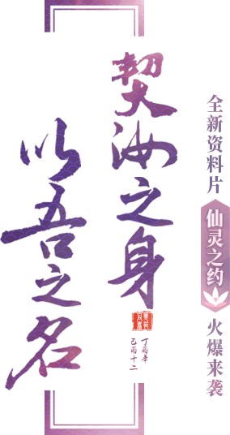
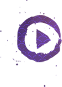
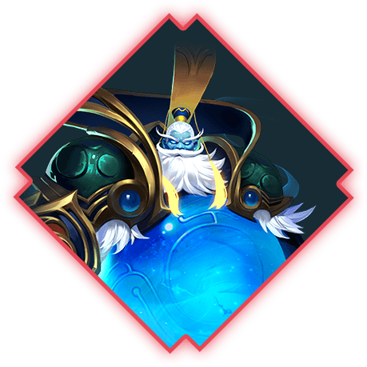
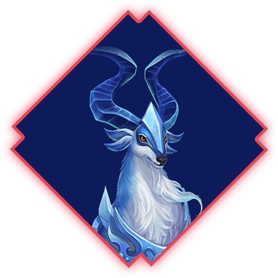
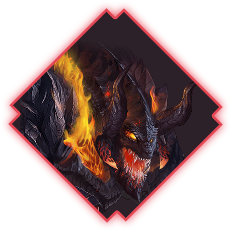
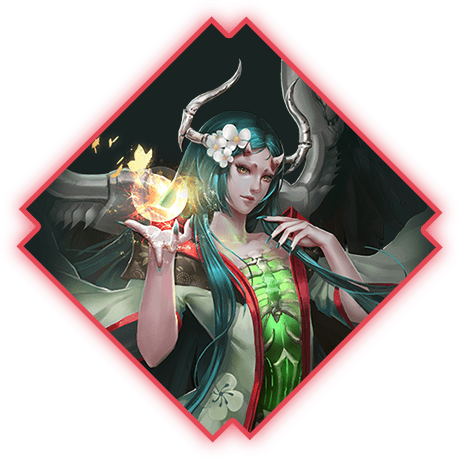
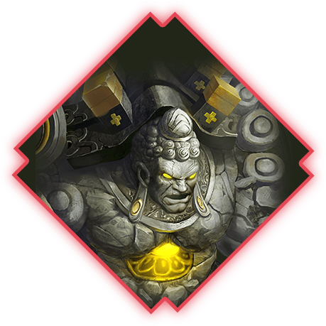
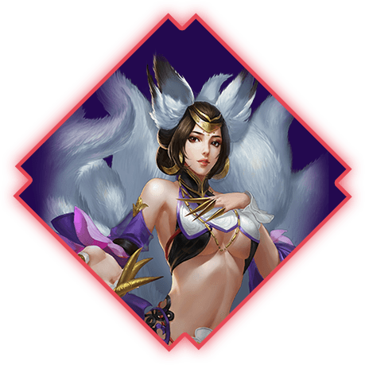

泉帝
初始资质

原为镇压北海千年的远古唇妖，吸收北海之精千年，得晋乾君之助脱去兽体化为人身，自称泉帝，广纳妖修，称霸一方。在海丰一役中，被诸葛印龙重伤，打回本体，所幸得黑龙相助才得以保存性命。此后居住于帝陵之中修身养性，偶尔也会现身指点前来历练的修士。
羬羊
初始资质

昆仑山上的神兽，性情温纯，身上带有祥和之光，是福瑞的象征，羬羊所过之地，必定风调雨顺，羬羊生性胆小，极少出没在人们的视线中，传闻每当有羬羊出没，附近必有圣人降生。
圣兽赤炎
初始资质

传闻为火龙后裔，万火之精的守护异兽，周身赤焰，火毒汹涌，中人立死，觉醒的赤炎兽可以使出八凶阵法，借助自身精血之力，召唤出八荒火龙，焚尽世间万物，有毁天灭地的奇威。为诸葛印龙以力降服，从此成为魔教圣兽。
姑获鸟
初始资质

姑获鸟夜飞昼藏，盖鬼神类。衣毛为飞鸟，脱毛为女人。一名天帝少女，一名夜行游女，一名钩星，一名隐飞。鸟无子，喜取人子养之，以为子。今时小儿之衣不欲夜露者，为此物爱以血点其衣为志，即取小儿也。
守护石神
初始资质

守护石神，乃娲皇“风里希所炼制的秘宝，乃取南疆的一座荒山融合补天剩余的五彩神石炼制而成，守护石神平时宛若一尊石像长眠巫祭广场，只有南疆巫族面临灭顶之灾的时候才会觉醒，保卫娲皇血脉。
九尾狐
初始资质

九尾狐，生性善良，善解人意，能道人言，每当遇见九尾狐出没，便是帝王祥瑞之兆。妖狐修炼成人极其艰难，每修百年，便幻化出一条狐尾，待修至九尾方修为大成，法力通天。